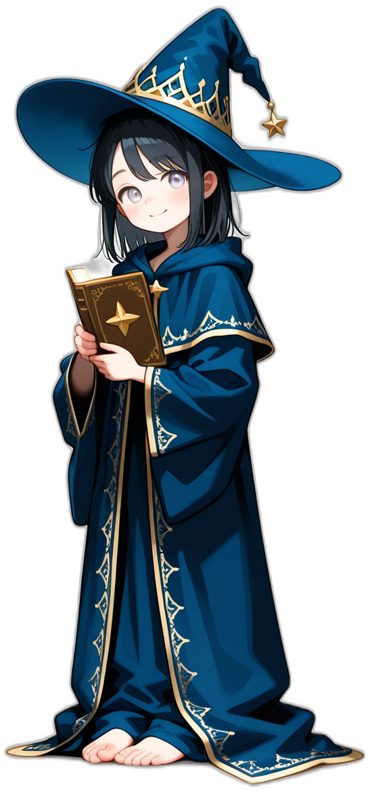
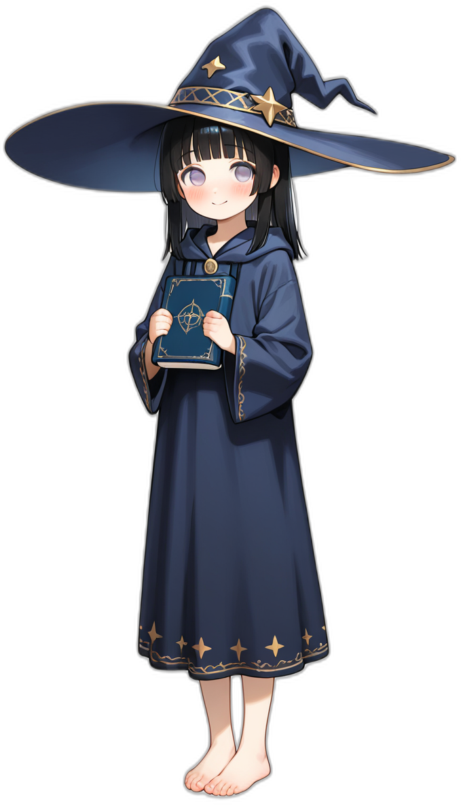

▸ クリック / Space
深い森にぽつんとともる小屋の中。360°ぐるりと見回せる3Dの暖炉で、本物のようにゆれる焚き火を眺めながら瞑想・集中・睡眠ができる、ブラウザだけで使える無料の瞑想空間です。インストール不要、WebGL対応のスマホ・PCですぐに始められます。
キーワード: 瞑想 / 焚き火 / 環境音 / 作業用BGM / 睡眠導入 / 集中 / リラックス / マインドフルネス / meditation / campfire / ambient sound / relax / focus / sleep.
灯里「…森のおくの、灯りのともる小屋へ、ようこそ。」
蒼「暖炉に、火を入れておいたよ。……冷えたでしょう。」
灯里「どうぞ、靴を脱いで。ふたりで、待ってたの。」